Flex Launcher Tamamen Ücretsiz Olup Hem Çok Oyunculu Hem de Tek Oyunculu Seçenekleriyle Oynamanıza Olanak Sağlar
Flex Launcher'ı Kullanmak Oldukça Basittir! Sadece Kurulum Dosyasını Bilgisayarınıza İndirip Kurduktan Sonra İstediğiniz sürümü seçip kullanıcı adı girerek oyuna başlayabilirsiniz
Flex Launcher, kullanıcıların oyuna daha hızlı ve kolay bir şekilde erişmelerini sağlayan pratik bir araçtır. Oyun keyfini sadece birkaç adımda yaşamak için Flex Launcher'ı tercih edebilirsiniz.